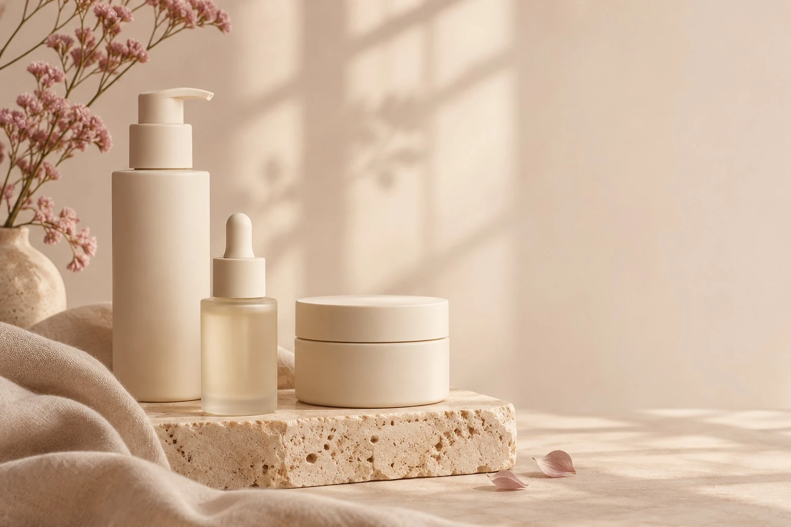
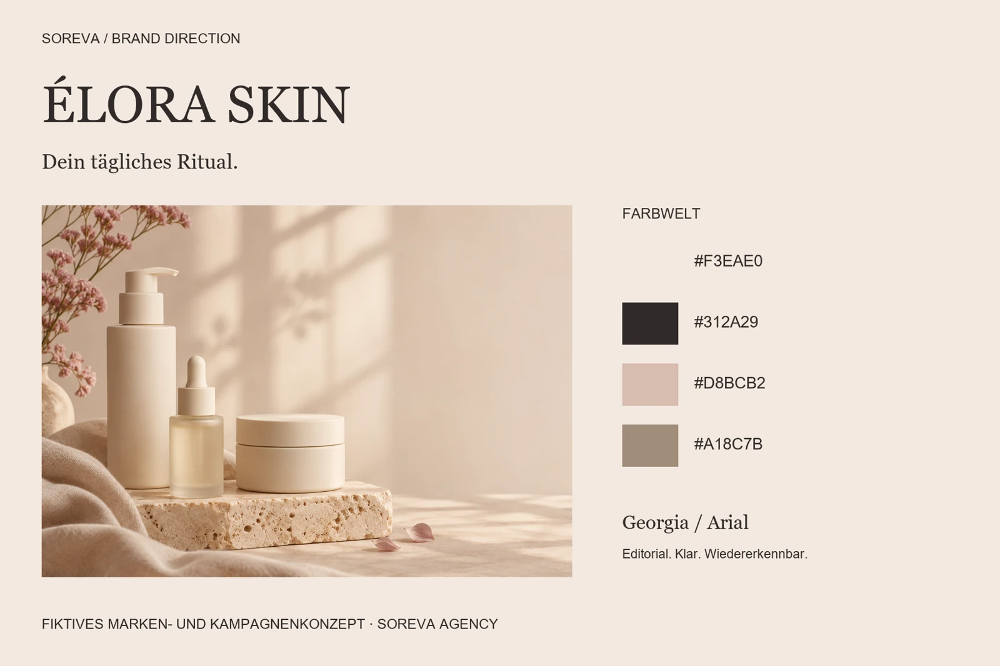
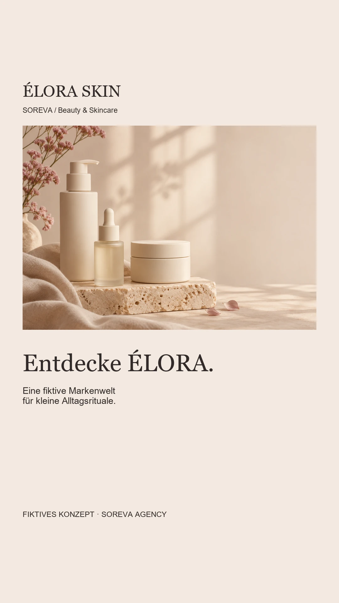
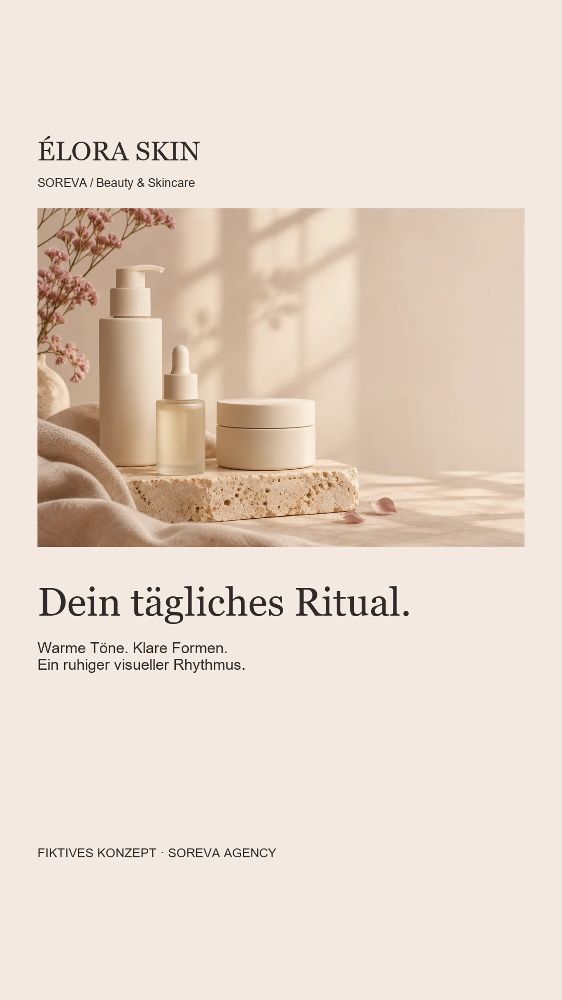
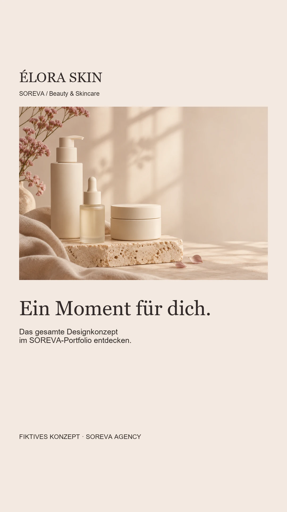

Beauty & Skincare / Markenidentität & Social Media
ÉLORA SKIN
Ein ruhiger Auftritt für bewusste Pflegemomente.
Fiktive, selbstinitiierte Konzeptarbeit von SOREVA Agency. Kein Kundenauftrag. KI-generierte Bildmotive; keine real erhältlichen Produkte oder Angebote.

01 / Ausgangspunkt
Eine Idee mit Richtung.
Wie wird eine fiktive Skincare-Marke auf Verpackung, Social Media und Website wiedererkennbar, ohne ihre Gestaltung mit unbelegten Produkteigenschaften zu begründen?
Gestalterisches Ziel: ein konsistenter Auftritt von der Markenwelt bis zu den digitalen Kontaktpunkten.
Gedachte Zielgruppe: Menschen, die eine ruhige, übersichtliche Markenwelt im Beauty-Bereich anspricht. Das Konzept setzt auf bewusste Routinen statt auf Wirkversprechen. Diese Einordnung ist eine konzeptionelle Annahme.
02 / Kreative Leitidee
Your daily ritual
Das tägliche Ritual wird zum gestalterischen Leitmotiv. Weiche Lichtkanten, großzügige cremefarbene Flächen und eine klare Typohierarchie geben den Motiven einen gemeinsamen Rhythmus.
Umfang: Markenrichtung, typografische Wortmarke, Farb- und Typografiesystem, fotografische Bildrichtung, drei Feed-Posts, drei Story-Seiten und Website-Präsentation.
03 / Markenidentität
Farbe. Schrift. Atmosphäre.
Eine eigenständige visuelle Welt mit wiederkehrenden Gestaltungsprinzipien. Die Wortmarke und Headlines nutzen Georgia, erklärende Texte Arial.

04 / Gestaltungsentscheidungen
Ein System, das zusammenpasst.
- Eine elegante Serifenschrift für Markenname und Headlines macht den Auftritt editorial. Arial strukturiert erklärende Texte und kleine Hinweise.
- Rosé-Beige setzt einen leisen Akzent. Dunkles Braun sichert lesbare Texte auf hellen Hintergründen.
- Unbeschriftete Gefäße zeigen eine Verpackungsrichtung. Es werden weder Inhaltsstoffe noch Wirkung, Tests oder reale Verfügbarkeit behauptet.
05 / Social Media
Wiedererkennung im Alltag.
Der Feed führt vom Markenauftakt über die Gestaltungsprinzipien zum Kampagnenmoment. Die Story übersetzt dieselbe Idee in eine kurze Sequenz. Jedes Motiv trägt einen sichtbaren Konzepthinweis.
Instagram-Feed


Dreiteilige Story






06 / Website-Gestaltungsrichtung
Ein Moment.
Ganz für dich.
Eine fiktive Skincare-Markenwelt zwischen klaren Formen, warmem Licht und kleinen Alltagsritualen.
Ergebnis der Gestaltung
Entstanden ist ein zusammenhängendes Designsystem mit plattformgerechten Social-Media-Motiven, Brandboard und Website-Präsentation. Das Konzept zeigt die gestalterische Herangehensweise von SOREVA.
Es wurde keine reale Kampagne ausgespielt. Reichweite, Umsatz und Conversion wurden nicht erhoben. Die Motive sind keine Produktdokumentation; ein funktionsfähiger Shop und reale Geschäftsangebote sind nicht Bestandteil der Arbeit.
DEINE MARKE / DEIN NÄCHSTER SCHRITT
Eine eigene Markenwelt entwickeln?
Erzähl uns von deinem Vorhaben. Gemeinsam klären wir, welche Gestaltung und Unterstützung zu deiner Marke passen.
Projekt unverbindlich anfragen →